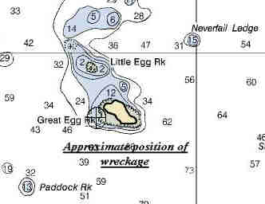

Description:
Schooner; 4 masted; Wood
Dimensions: length
- 225.1 ft. , width - 43.3
ft. ; depth - 20.4 ft.
Tonnage: gross - 1603 , other
-
Propulsion: Sail
Machinery:
Cargo:
The Shipwreck
Date Sunk: January 3, 1923 .
Cause:
Stranded.
Location: Manchester, northwest corner of Great Egg Rock .
Coordinates: Latitude, 42o - 33'- 53"N Longitude, 70o - 44' - 20"W.
Loran:
The evening of January 3rd an
easterly storm battered the North Shore of Massachusetts as the twenty seven-year-old
schooner Alice M. Colburn labored offshore. Enroute from Portland, Maine to Norfolk
Virginia, whether she was blown in by the gale or ran in seeking shelter is unknown
however the helpless schooner was driven onto Egg Rock, one mile off Coolidge Point,
Manchester, where she stranded. Her crew abandoned ship and was assisted by a nearby Coast
Guard station.
By January 4th the vessel was full of water and breaking up.
Back to Top
Dive Site Conditions
Depth in feet: maximum - ; minimum
- .
Visibility in feet:
average - .
The only dive related reference found on
this wreck comes from Brad Luther's pamphlet entitled "New England
Shipwrecks" which was prepared for the Boston Sea Rovers Thirteenth
Annual International Underwater Clinic, Saturday April 29, 1967.
Click on the image to go to the MapTech Map Server,
for additional navigation information. 
Luther reported that he had not yet found the main body of wreckage but
that a portion had been found between Egg and Little Egg Rock. However, some Beverly
divers had supposedly found the main hull on the southwest corner of the rock.
Back to Top
Historical Background
Constructed: year - 1896
; where - Bath, Maine .
builder
- Wm. T. Donnell
Construction details: Yellow Pine, Copper and Iron fastened.
Crew: 10 ;
Master: Cap't McLeod (1915)
Owners: Ulen
Contracting Corp. .
Home or Hailing Port: Home - Boston, Mass.; Hailing - New
York, N.Y.
Former Name(s), date(s):
Official number: 107211
Country: U.S.A.
Other Comments:
Back to Top
Salvage
The January 10, 1923
issue of The New York Maritime Register reported that wreckers were contracted to
strip the vessel after her crew had left the area for Boston, on January 6 .
Back to Top
Sources:
Encyclopedia of American Shipwrecks; Berman, 1972
MapTech
Mapserver
Merchant Vessels of the United States; 1922
New England Shipwrecks; Luther, 1967
New York Maritime Register; January 10, 1923
The Record, "American Lloyds", American Bureau of Shipping; 1921
Back to Top
These files are under construction. Any
information, specifically dive site related, would be greatfully appreciated.
Send comments to: Chris Hugo
Copyright © 2000 by Christopher C. Hugo
Massachusetts Board of Underwater Archaeological Resources
All Rights Reserved
|